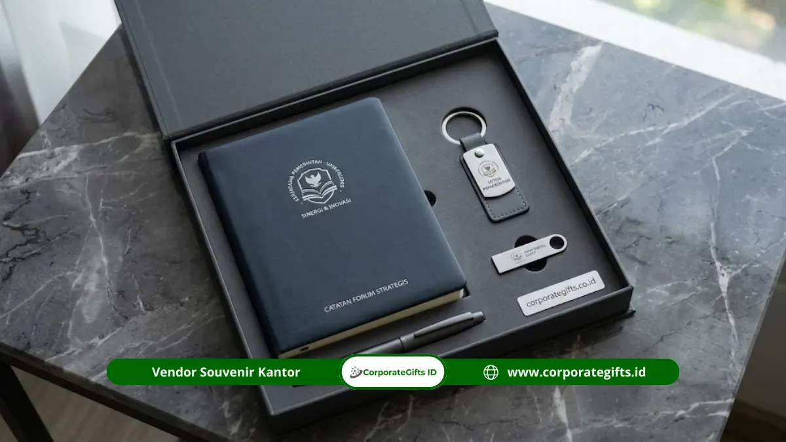

Corporate Gifts ID - Souvenir mitra kampus negeri adalah cinderamata resmi untuk mempererat kerja sama dengan perguruan tinggi negeri (PTN) di seluruh Indonesia. Pilihan terbaiknya mencakup plakat MoU berukir kayu jati atau akrilik, tumbler insulasi tahan panas, notebook hard cover kulit sintetis, dan set perlengkapan kantor berlogo ganda (dual-branding). Cara pemesanannya pun memerlukan ketelitian khusus: tentukan produk dan jumlah, minta penawaran serta sampel fisik dari vendor, verifikasi legalitas dokumen pengadaan, lalu terbitkan kontrak atau surat pemesanan resmi sesuai regulasi administrasi instansi.
Poin Kunci Souvenir Kemitraan Kampus Negeri:
- Standar Protokol: Cinderamata resmi PTN wajib mencerminkan nilai akuntabilitas, martabat institusi, dan profesionalisme tinggi.
- Pilihan Produk Favorit: Plakat MoU kayu/akrilik dua logo, tumbler stainless steel tahan karat, notebook kulit eksklusif, dan executive office set.
- Kepatuhan Regulasi: Mengikuti tata kelola pengadaan barang pemerintah (Perpres 16/2018 jo. 12/2021) dengan kelengkapan administrasi sah.
- Kualifikasi Vendor: Memiliki legalitas lengkap (NIB, NPWP, PKP), sampel fisik gratis, garansi cacat produksi, serta rekam jejak terpercaya di lingkungan PTN.
Kerja sama antara instansi pemerintah, lembaga formal, maupun korporasi swasta dengan perguruan tinggi negeri (PTN) di Indonesia terus bertumbuh pesat. Kolaborasi ini mencakup penandatanganan nota kesepahaman (MoU), perjanjian kerja sama (PKS), proyek riset terapan, hingga program magang dan kelas industri. Setiap agenda penandatanganan kemitraan menjadi momen strategis untuk mengukuhkan relasi jangka panjang melalui pemberian cinderamata yang berbobot dan bermakna.
Apa Itu Souvenir Mitra Kampus Negeri?
Souvenir mitra kampus negeri adalah cinderamata resmi yang diberikan kepada atau oleh institusi yang memiliki hubungan kerja sama aktif dengan perguruan tinggi negeri. Souvenir ini umumnya menampilkan logo kedua belah pihak secara proporsional dan diserahkan dalam seremoni formal sebagai simbol penghormatan antarlembaga.
Penerima cinderamata kemitraan PTN umumnya merupakan jajaran pimpinan institusi, seperti rektor, wakil rektor, dekan, direktur pascasarjana, kepala dinas, atau direktur utama korporasi mitra. Oleh sebab itu, kualitas material, kerapian grafir, dan elegansi kemasan hardbox menjadi prioritas mutlak yang tidak boleh diabaikan.
Karakteristik Unik Souvenir Kemitraan Kampus Negeri
Berbeda dari institusi swasta yang memiliki fleksibilitas tinggi dalam pemilihan suvenir kasual, suvenir untuk PTN terikat pada protokol kedinasan dan akuntabilitas publik. Berdasarkan status hukumnya, PTN di Indonesia terbagi menjadi tiga kategori:
- PTN Satuan Kerja (Satker): Penganggaran dan pengadaannya terikat langsung dengan tata kelola keuangan kementerian terkait.
- PTN Badan Layanan Umum (PTN-BLU): Memiliki fleksibilitas tata kelola keuangan internal namun tetap mengacu pada transparansi audit negara.
- PTN Badan Hukum (PTN-BH): Memiliki otonomi operasional dan aset mandiri, dengan standar citra institusi berkelas internasional.
Tiga karakteristik utama yang membedakan suvenir mitra kampus negeri adalah:
- Kepatuhan Brand Guideline Logo: Kampus negeri memiliki regulasi ketat mengenai rasio dimensi, warna korporat (pantone), dan penempatan lambang almamater yang tidak boleh diubah secara sepihak.
- Transparansi Berkas dan Audit: Setiap pengeluaran anggaran suvenir untuk acara resmi masuk dalam laporan pertanggungjawaban yang diaudit, sehingga memerlukan faktur pajak, invoice bermeterai, dan berita acara serah terima (BAST).
- Profil Penerima Berstrata Tinggi: Cinderamata diserahkan kepada pimpinan lembaga terkemuka, sehingga produk harus memiliki ketahanan material jangka panjang dan nilai estetika tinggi saat dipajang.
Momen Penting Penyerahan Souvenir Mitra Kampus Negeri
Souvenir mitra kampus negeri diserahkan pada momentum seremonial yang memerlukan dokumentasi publik dan penguatan ikatan kemitraan, di antaranya:
- Seremoni Penandatanganan MoU & PKS: Penyerahan plakat dan gift set eksekutif setelah penandatanganan naskah kerja sama.
- Kunjungan Kerja dan Audiensi Pejabat: Penyambutan delegasi pimpinan kementerian, bupati, walikota, atau jajaran direksi BUMN.
- Seminar Internasional dan Lokakarya Kolaboratif: Apresiasi pembicara kunci dan institusi sponsor pendukung konferensi akademik.
- Sidang Senat Terbuka dan Dies Natalis: Momen tahunan puncak perayaan kampus yang mengundang seluruh mitra strategis.
- Penutupan Program Magang dan Riset Bersama: Simbol apresiasi kepada industri mitra atas pendampingan mahasiswa dan dosen.

Alur administrasi pengadaan dan kurasi cinderamata formal untuk mempererat kerja sama institusi dengan kampus negeri.
Pilihan Produk Souvenir Mitra Kampus Negeri Terbaik
Untuk memastikan cinderamata Anda meninggalkan kesan mendalam dan bernilai guna tinggi, berikut 4 pilihan produk suvenir kemitraan PTN yang paling direkomendasikan:
1. Plakat MoU Berukir Dua Logo (Dual-Branding)
Plakat adalah cinderamata utama dalam seremoni kemitraan formal. Pilihan bahan paling populer untuk PTN adalah kombinasi kayu jati dengan plat logam kuningan etsa, atau akrilik kristal tebal dengan ukiran laser presisi tinggi. Plakat ini dirancang untuk dipajang di ruang pimpinan rektorat atau dekanat sebagai bukti sahih kolaborasi antarlembaga.
2. Tumbler Stainless Steel Insulasi Premium
Tumbler berbahan food-grade SUS 304 dengan teknologi vakum ganda mampu mempertahankan suhu minuman panas maupun dingin hingga 12 jam. Grafir laser presisi yang memuat logo mitra dan nomor kerja sama menjadikan souvenir kantor fungsional ini sangat dihargai dan digunakan sehari-hari oleh pejabat kampus.
3. Notebook Hard Cover Kulit Sintetis Eksklusif
Bagi kalangan sivitas akademika, notebook berpenjilidan hardcover berbahan kulit sintetis (PU leather) atau linen impor sangat berguna dalam agenda rapat kerja senat dan konferensi. Teknik cetak deboss atau hot stamping foil emas/perak memberikan sentuhan klasik yang anggun.
4. Executive Desk Set dan Perlengkapan Meja Kantor
Paket terpadu yang memuat pulpen metal eksklusif, kartu nama holder berlapis kayu, flashdisk metal custom, dan sticky notes dalam hardbox bermagnet. Set ini memberikan impresi prestisius saat diletakkan di atas meja kerja para dekan maupun mitra industri.
Tabel Komparasi Produk Souvenir Kemitraan Kampus Negeri
Gunakan matriks perbandingan berikut untuk menyesuaikan jenis cinderamata dengan profil penerima, fungsi acara, dan estimasi waktu pengerjaan:
| Jenis Produk | Material & Finishing | Karakteristik Branding | Target Penerima | Estimasi Produksi |
|---|---|---|---|---|
| Plakat MoU Kemitraan | Kayu Jati Solid / Akrilik Kristal 15-20 mm | Grafir Laser Dual-Logo & Plat Etsa Kuningan | Rektor, Dekan, Direktur Utama | 5 - 8 Hari Kerja |
| Tumbler Stainless SUS 304 | Double-Wall Vacuum, Matte Finish / Powder Coating | Laser Marking Permanen & UV DTF Full Color | Dosen, Peneliti, Tim Ahli Kemitraan | 4 - 7 Hari Kerja |
| Notebook Hard Cover | PU Leather Eksklusif, Kertas Bookpaper 80 gsm | Deboss Blind Stamp atau Hot Foil Emas/Perak | Akademisi, Pimpinan Rapat, Tamu VIP | 5 - 10 Hari Kerja |
| Executive Desk Set | Pulpen Metal Parker-Style, Hardbox Magnetik Beludru | Kustomisasi Grafir Setiap Item & Sablon Box | Narasumber Utama, Pimpinan Kementerian | 7 - 12 Hari Kerja |
Cara Pesan Souvenir: Prosedur Pengadaan Resmi PTN
Pengadaan barang cinderamata untuk institusi pemerintah dan perguruan tinggi negeri wajib mematuhi ketentuan Perpres Pengadaan Barang/Jasa Pemerintah. Berikut tahapan standar pemesanan suvenir kemitraan yang efisien dan tertib administrasi:
- Penyusunan Kerangka Acuan Kerja (KAK): Tentukan jenis cinderamata, estimasi volume pemesanan, spesifikasi bahan minimum, dan pagu anggaran yang telah disahkan.
- Pengajuan Permintaan Penawaran (RFQ): Ajukan surat permohonan penawaran resmi kepada beberapa vendor souvenir berpengalaman untuk membandingkan spesifikasi dan kelayakan harga. Anda dapat langsung menggunakan fitur minta penawaran resmi CorporateGifts.ID.
- Verifikasi Legalitas dan Uji Sampel Fisik: Pastikan vendor memiliki NIB berbasis risiko, NPWP, PKP, rekening korporat, serta kesediaan mengirimkan prototipe sampel sebelum produksi massal dimulai.
- Penerbitan Surat Pesanan atau Kontrak Kerja: Penandatanganan surat perintah kerja (SPK) yang memuat klausul masa pengerjaan, spesifikasi teknis, garansi produk, dan termin pembayaran.
- Produksi Massal dan Quality Control Berlapis: Vendor mengerjakan pesanan sesuai sampel yang disepakati dengan pemeriksaan ketat pada warna logo pantone dan ketahanan sablon/grafir.
- Serah Terima Barang dan Penyelesaian Administrasi: Pengiriman pesanan disertai Berita Acara Serah Terima (BAST), surat jalan, faktur pajak resmi, dan kuitansi bermeterai untuk kebutuhan audit keuangan instansi.
Tips Memilih Vendor Souvenir Mitra Kampus Negeri
Ketepatan memilih rekanan pengadaan sangat menentukan kelancaran agenda formal kemitraan Anda. Pastikan vendor pilihan Anda memenuhi kriteria esensial berikut:
- Portofolio Instansi Teruji: Memiliki pengalaman mengerjakan proyek cinderamata resmi untuk perguruan tinggi negeri terkemuka maupun lembaga kementerian.
- Fasilitas Mockup Digital & Sampel Fisik Cepat: Menyediakan visualisasi pracetak akurat serta sampel fisik nyata untuk dipresentasikan kepada pimpinan sebelum persetujuan akhir.
- Kepatuhan Administrasi Perpajakan: Mampu menerbitkan e-Faktur PPN, kuitansi bermeterai sah, serta dokumen legalitas perusahaan yang lengkap.
- Jaminan Garansi Bebas Cacat: Memberikan komitmen penggantian unit baru secara cuma-cuma apabila ditemukan kesalahan cetak logo atau cacat produksi.
- Kapasitas Pengiriman Nasional Tepat Waktu: Menggunakan jaringan ekspedisi kargo terpercaya dengan asuransi penuh untuk menjamin produk tiba dalam kondisi prima sebelum jadwal seremoni.
Pertanyaan Seputar Souvenir Mitra Kampus Negeri (FAQ)
Kesimpulan dan Rekomendasi
Pengadaan souvenir mitra kampus negeri menuntut keseimbangan sempurna antara formalitas protokol kedinasan, keanggunan estetika visual, dan kepatuhan prosedur administrasi negara. Melalui kurasi produk yang tepat seperti plakat berukir dual-branding, tumbler insulasi tahan lama, atau gift set eksekutif, institusi Anda dapat membangun citra profesional yang kokoh dan disegani.
Pastikan Anda selalu bermitra dengan vendor spesialis yang memahami seluk-beluk regulasi pengadaan pemerintah serta mampu menyediakan sampel fisik nyata dan dokumen pajak yang akuntabel.
Disclaimer: Informasi dalam artikel ini bersifat panduan umum dan dapat disesuaikan dengan regulasi pengadaan internal instansi, tata kelola perguruan tinggi negeri, serta ketentuan kerja sama yang disepakati kedua belah pihak.
Referensi Regulasi: Peraturan Presiden Republik Indonesia Nomor 16 Tahun 2018 tentang Pengadaan Barang/Jasa Pemerintah jo. Peraturan Presiden Nomor 12 Tahun 2021, serta praktik terbaik tata kelola cinderamata kelembagaan Indonesia.